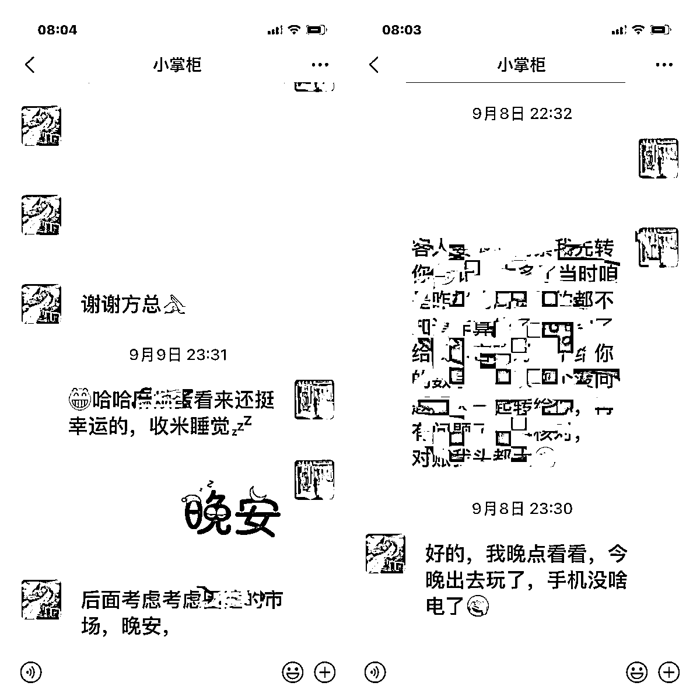
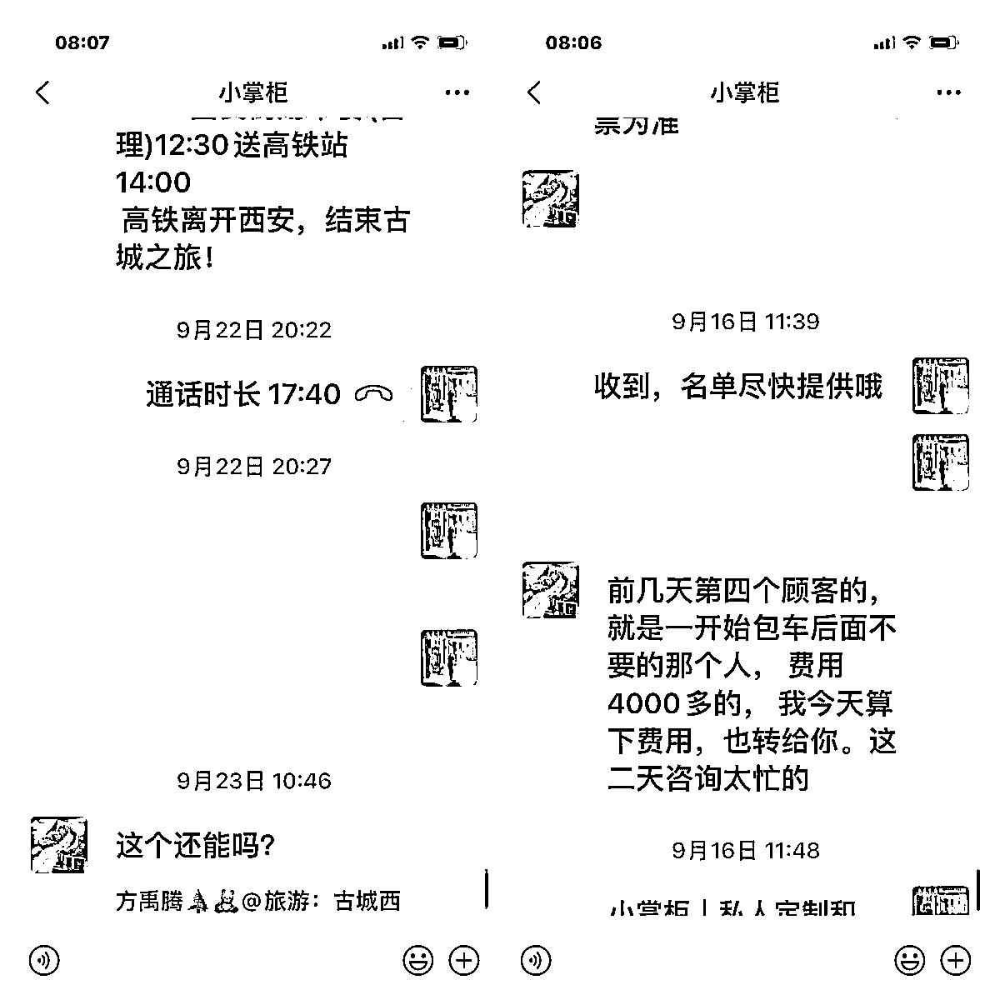

来源：https://r6kr7evxni.feishu.cn/docx/IDgQdNsQ4o0kMSx9QSsc4rbBngd
哈喽，大家好，我是阿渡，8月份在生财分享了一篇关于新手怎么在小红书上做旅游项目的精华帖。
精华帖链接：https://t.zsxq.com/13IPAZDSQ
之后，我们又带着两期学员进行了实操，实操的过程中摸索出了一些新的东西，在这里继续分享给大家，目前生财关于这一块的内容较少，但是旅游项目又是一个红利。所以，希望这篇文章能给想实操这个项目但又无从下手的圈友提供一些思路。
首先，先来看一下我们团队这将近3个月取得的一些成绩。
7月底带着内测学员小掌柜做西安旅游，完全0基础做西安定制游，一周内，就成交了一笔佣金过千元的大单。
第一个月（8月份）就成交了15单，第二个月（9月份）成交了27单。
小掌柜部分订单：
小掌柜部分佣金：


8月18号，我们开了第一期和第二期培训，共有学员37人，对接西安和云南旅行社，业绩如何呢？
学员对接云南夏全部分订单：
学员对接西安国旅部分订单：
我们的两期学员都是非旅游行业的从业人员，在短短1个月的训练营中就能拿到这样的成果，说明这个小红书旅游项目对于新手小白来说，是能够快速拿到正反馈的。
接下来我会从旅游产品选择、小红书笔记制作和引流、微信成交以及新人入局的门槛和建议这四部分进行分享，全文内容较长，请大家移步飞书：
旅游是一个特别大的赛道，大家在小红书上搜旅游相关的笔记会发现，旅游项目的变现方式是非常多的，比如卖行程线路、机票预订、酒店民宿等商家博主，或者是接商业广告的纯旅游博主，还有做本地徒步、周边亲子游等短途产品的商家，这些都是旅游赛道的细分领域。
每个细分领域都有不同的玩法，我们前两期训练营主要是做行程线路这个领域的更下一级——国内定制游，客单在3000-3w之间，均客单在1w+。
什么是定制游呢？定制游是一种针对个人或小团体需求而量身定制的旅行体验。与传统的团体旅行相比，定制游更加个性化和灵活，旨在满足旅客特定的兴趣、偏好和需求。
在定制游中，旅行社或旅行规划者会与客户进行深入的沟通，根据用户自己的喜好、时间和预算定制具体的行程，人数越多，定制游的单价就越低，可以说，定制游除了价格贵一点，其他都没啥毛病。国内的定制游单人单天的价格大概在800-1200左右，相当于是3-4天跟团游的价格，境外定制游的价格会根据每个国家的经济水平有所不同，新西兰的定制游单价大概在每人每天2000-3500元浮动。
除了定制游，还有跟团游、散拼团两种，跟团游大家应该都不陌生，就是跟大团、由旅行社固定时间固定线路，走一走旅游城市的主要景点，也称特种兵式打卡，这种团很便宜，凡是小红书上写X天X夜1K+的，基本都是跟团游。但是跟团游有一个要注意的地方，因为价格便宜，所以有些跟团游实际上是购物团，就是变着法的让你买东西，这类产品售后很差，经常会遭到投诉。
图片：

还有一种是散拼团，更多针对的是自由行的游客。比如游客想到西安玩5天，但是不想报跟团游，他又想去华山，那么他就有可能会报华山一日游，同理，像兵马俑一日游、大唐不夜城一日游之类的，就是散拼团。散拼团大概是300左右的客单，出单是相对容易的，就是客单较低。
图片：

这三类产品，基本上地接旅行社都会有，你可以选择都做，也可以选择只做某一类产品，不过人的精力是有限的，就看你想要怎么分配自己的精力，当然，也得看你能力怎么样，能谈到什么资源，高客单成交起来会比低客单困难一些，而且想要找到愿意合作且靠谱的旅行社也是比较困难的，但是成交一单佣金非常香，1w+的订单，我们学员能拿1K+的佣金。
除了上面三个大类产品，还有小团游、包车游，小团游就是将跟团游的人数控制在6人左右，这类产品客单会比大团高一些，也是近年来年轻人选择出行的一种趋势，但本质上来说，还是属于跟团游，只不过因为人数少，可能灵活性更强一些。
包车游就是旅行社提供车+司机，帮预定酒店、门票等，家庭出游或团体出游更倾向于选择这种方式。这种方式相对于跟团游更加灵活，旅客可以完全掌控行程，包括选择目的地、停留时间和路线，价格高于跟团游但低于定制游，一般旅行社的都能提供包车游，也有专门只做包车游的旅行社。
我们目前的变现模式是把目标用户从小红书引流到私域进行成交，所以怎么在小红书做流量以及怎么从小红书把流量引到微信，这是整个变现闭环的关键环节之一，因为我们的训练营主要是做高客单，所以本篇文章的实操干货都是围绕高客单进行分享。
昵称是用户认识了解我们的第一步，即用户首先是通过我们的账号昵称来认识和判断我们是谁，我们是做什么的。
昵称上非常容易犯的错误就是委婉，太过于个性化，让用户不能通过昵称来判断我们是做什么的，更甚至是用户压根看不懂，一个好的昵称是可以通过关键词给账号带来搜索量的。
给大家几个可以直接套用的昵称模板：
总之，我们的昵称最好直接能够体现你的定位，让用户对你能提供什么服务一目了然。
昵称这里需要注意的点：我们是个人号，所以昵称一定体现出来的是“人”的行为或定义，不要把昵称设置成大类目，比如：XX旅行、XX定制游、云南旅游、XX周边游等，这些昵称是不具备个人属性的，所以个人号非常容易违规，大家一定要注意。
头像可以采取文字形式或真人出镜形式。文字形式的头像和昵称一样，能够让用户一眼就看出来你是做什么的，而真人出镜的头像则可以拉进和用户的距离，让用户感觉到真实，增强信任感，特别是做IP人设的账号，强烈建议使用真人出镜的头像，也可以用你的昵称或者地域来做头像。
有很多小伙伴是喜欢用风景照来做头像的，虽然风景头像也是和我们赛道强相关的，但是只有风景，没有真人出镜，没有地域名称，你的头像辨识度和记忆点会很低，这里也不建议使用。
点进简介的用户一般是通过笔记进了你的主页，想更多了解你。所以，简介的内容是非常重要的，也是用户决定要不要关注你的重要依据。
一个好的简介，需要告诉用户你是谁？你是干什么的？为什么关注你？你能给TA提供什么？
举例：
1.我是谁、做什么的、我能提供什么：在新8年司导、私人订制行程、本地跟团、新西兰旅行服务团队
2.很厉害（有背书、专业）：新西兰旅游协会TAANZ会员
3.和别人有什么不一样：专注高品质纯玩、累计服务5000人+，包括陈道明、靳东等明星
简介的排版：
1.3-4行最佳；
2.短句为主；
3.适当用数字。
简介部分容易违规的点：
可以单独写私人订制、定制游，或者专注XX旅游，但是不要写提供私人订制服务、专注私人订制旅行等，这些都是我们实测出来会违规的点，大家写简介的时候要注意一下。
背景图和瞬间的作用就是强化我们的人设和专业度，一定要和我们的旅游强相关，给大家几个建议：
1.可以用文字写上你能提供的服务
2.放好看的标志性景点，你做哪个目的地，就放该目的地相关的景点
3.放真人出镜的旅游照片，注意美感，不要太拥挤
4.放线下旅行社的门头照片
大家刷小红书账号时应该有注意到，个人号博主很少有设置瞬间的，白白浪费了一个好的广告位。
瞬间我们可以隐晦的放联系方式，放用户成交的聊天截图，放朋友圈的照片，放生活打卡等，就是咱们引流的时候要隐晦一点，不要太明目张胆了，会容易违规。成交截图、朋友圈照片可以提高转化率，引导用户成交，生活打卡可以让你的人设更真实。
做旅游赛道，搭建自己的素材库是非常重要的，写一篇笔记最基本的内容就是景点介绍+景点图片。比如说你做西安，那你写笔记肯定得涉及到西安有哪些景点，不同的景点有什么玩法，再加上相关的配图。
所以，在前期了解景点相关信息的时候，就可以同步把这些信息整理到文件库，方便后续写笔记的时候直接查阅，复制粘贴，而不是每次写笔记都得去百度西安有哪些景点，某某景点有哪些玩法，这样会非常浪费时间。
因为我们的产品是定制游，区别于跟团游每条线的景点是固定的，定制游的行程中景点可以随机组合，因此定制游和跟团游在整理素材库这一块会有一些差别。
定制游在整理景点信息时，需要将该目的地的所有景点都整理出来，整理的逻辑可以按照你自己的想法来，也可以按照地理位置或者其他方式来，这一点都随意。整理好景点之后，每个景点准备几份景点介绍，然后再罗列出该景点区域内有哪些小的景点，有哪些项目，再给这些小景点和项目准备1份或几份介绍说明，后面写笔记要用到的时候，直接复制粘贴就可以了，或者用chatgpt简单修改一下。
除了整理景点信息，把图片整理归类也是很重要的。一个目的地是有非常多景点的，每次发笔记，你都得给相关景点配图，临时去找的话也需要花很多时间，最好的方法就是一次性或者每次找到一张好看的相关景点图片就直接放到该景点的图片文件夹中，下次要用的时候直接上传就可以。
图片可以归类为两部分，一部分是以景点分类，另一部分就是每个景点会涉及到的餐饮美食、景点景色、酒店住宿、体验活动/游玩项目、用车情况等图片。
我大概把小红书旅游笔记分为3个类型：
第一种：流量笔记，也就是干货笔记，笔记的目的是为了起号、提升账号权重、吸引流量，流量笔记在起号初期可以多发一点，因为这类笔记非常好起数据，但是这类笔记的转化不强，大多数用户都是点赞收藏，就没有然后了，连评论都会很少。比如，旅游攻略、避坑、景点介绍等。
不过，虽然攻略笔记转化效果一般，但是大家也不要完全不去写，特别是前期，攻略合集笔记写好了，是非常容易起数据的，很容易几百互动甚至上千了，而且有四个可以提升攻略笔记转化率的小技巧，一个是在攻略笔记里插入行程安排建议，就是那种行程速览，每天从哪到哪；二就是在结尾做个自我介绍，我是XXX，在什么情况下你能找我，我能给你提供什么，也就是一个简易的自我介绍，切记不要太直白，咱们写隐晦一点；三就是在评论区做小剧场，用小号或者让朋友在评论区去模仿正常用户留言，或者在笔记中写上“留下时间+人数”等引导信息，然后将评论置顶；最后一个就是写产品笔记，当用户通过攻略笔记点进你的主页，然后查看你的产品笔记时，也是可以完成转化的。
那么什么是产品笔记呢？就是我接下来要说的第二种笔记类型：赚钱笔记。赚钱笔记有两种表现形式：一是直接展示产品，即产品笔记，比如XX景点、几天几夜、包含什么项目、什么价格等，二是展示和用户的聊天截图，用聊天截图去引导转化。
大多数的旅游企业号，都是直接展示产品的居多，但是这里有个问题，如果你大量去抄企业号的笔记，他们的产品笔记营销感是很强的，个人号抄多了，容易被系统检测到，一旦被系统检测到提示你违规，那么你就成了重点观察对象，一些过于营销的内容和引导用户评论关注的内容，短期内就不要放上去了。
第三种：人设笔记。人设笔记的目的是增强用户的信任感，也称故事名片笔记。把你从业的经历、或者旅行社的相关资质放上去，然后置顶。这类笔记表面上看，数据不咋样，可能没什么人互动，点赞评论也很少，但是他在无形中传递给用户的信任感，是能大大的提高赚钱笔记的转化率的。
除了故事名片，其实我们也可以通过干货笔记去增强用户对我们的信任感，只要你的笔记内容足够真诚，足够专业，足够详细，足够真诚，给用户带来足够的价值，慢慢的也会让用户对你产生信任。
流量笔记、赚钱笔记、人设笔记。这三类笔记相辅相成，流量笔记和人设笔记就是给赚钱笔记保驾护航的保镖，要有流量和信任，用户才能通过赚钱笔记来找你成交。
这三种类型的笔记，故事名片笔记有一篇置顶就可以了，攻略类型的笔记总的占比20%左右，但是前期多写一点，可以占个40%左右，后期可以偶尔秀一下客户转账截图，剩下的就写展示产品的笔记。这个是个人号的玩法，等大家做起来之后，是建议大家注册企业号，搭配企业号一起玩的。
小红书平台对于引流的审核经历了层层迭代，现在是愈加严格了，我们在实操过程中也是在不断地踩坑摸索，调整话术，调整字眼，调整引流方式等，尽可能的规避平台的审核把用户转化到私域，目前我们用的较多的方式有以下几种：
①从源头下手
因为我们做的是高客单产品，所以在写笔记时就会筛选客户，在笔记中就告诉用户我们做的是定制游，通过布局相关关键词，调整笔记的标签等方式，让刷到这篇笔记的用户标签更精准一些，从而避免我们去过多的引流心理价位较低的用户，冒不必要的风险。
②埋钩子
a.文本框
每篇笔记我们都可以在文本内容中植入提高转化的信息，比如：1.推荐行程路线；2.写上行程价格；
同时在文本框末尾埋钩子，可以是：1.做自我介绍，比如我是谁，我能提供什么，你在什么情况下可以找我；2.想去XXX旅游的姐妹，在评论区回复XXX；
b.评论区
在评论区直接引导用户留言，然后将这条评论置顶，把转化信息放在评论区会减少放在文本框中被系统检测到营销引流动作的概率，也可以引导用户在评论区按照你的节奏留言。
这里的刷评论不是说去花钱刷评论，而是找小号或者让朋友模拟正常用户咨询在评论区留言，留言内容可以“xx号xx人”“xx还有团吗？”“xx天xx人怎么报价”等。
③引流方式
a.瞬间
瞬间是一个挺好的引流方式，可以根据自己的喜好和实际情况将微信融合进去。
b.小红书ID
将小红书号设置成微信号，然后私聊时引导用户看小红书ID，比如：免费定制行程看小红书号或者看小红书号给你发具体的行程和报价，懂得用户都懂，就看她加不加你了
不过，小红书的ID账号只能更改一次，可以改成自己的微信号，最好设置成英文+数字，或者纯英文，这样用户看了才容易反应过来这是你的微信号，纯数字的话用户分辨不出来，最好字数控制在8位数以内
d.群聊+小助手+群消息置顶
这个方式是目前学员里用的较多的，私聊邀请进群，最开始是用小助手引导用户发微信，但后面发现小红书有时候会屏蔽微信号，就改成了在图片中写上微信，然后将这张图片置顶，用户进群之后引导她查看群置顶消息。
这个玩法有个关键的点就是：及时回复！及时回复率高的话，成功加微率能到70%左右。但是如果回复不及时，可能只有30%左右的成功率。
e.pk组件
打开小红书，点击中间底部加号，去添加图文笔记→在笔记编辑页面，找到并点击互动组件→点击PK组件→填写PK标题以及观点→发布后，即可查看到PK信息。


如果想深入放大小红书旅游项目，做矩阵和投流是必不可少的，矩阵操作最核心的内容就是前面讲到的素材库搭建，只有素材库搭建好，才能够快速地批量制作笔记。
除了素材库，矩阵操作还有另一个核心内容：设计属于自己的文本框模板。旅游赛道的内容框架简直不要太简单，主要由以下几个部分组成：
①用户痛点；②自我介绍；③景点介绍；④行程线路；⑤行程亮点；⑥产品细节；⑦亮点细节
基本上，所有的旅游笔记都逃不掉上面几个部分，我们可以根据自己的偏好来设计开头。
建议大家用以下三种开头，
第一种：痛点切入
定制游的笔记，就在开头去描写跟团游和自由行的不适，跟团游跟行程太累、自由行做攻略麻烦、花费高等，用户痛点一定要认真研究，不管什么产品，想要卖出去，就一定是戳到了用户的某个痛点。
然后就可以接景点介绍+行程线路+行程亮点+产品细节+亮点细节，最后接自我介绍。
第二种：自我介绍切入
在笔记的一开头就跟用户打招呼，比如“嗨，我是XXX，很多小伙伴想来西安旅游或者很多宝妈想带娃来西安旅游，但是不知道西安有哪些特色景点之类的，又或者是不知道报跟团游、定制游还是自由行，然后巴拉巴拉讲一通，引出后面介绍景点、介绍行程线路、介绍行程亮点，再插入定制游产品，介绍产品细节、亮点细节，最后再切一下自我介绍。”
第三种：景点介绍切入
这类开头，是我目前在小红书刷到用的最多的开头，不过因为大多都是企业号，所以这些博主的开头景点介绍都很官方，就像是课本上介绍的那种感觉，企业号用可以，人家本身就是商家嘛，系统也不管你，但是个人号也这样写的话，一是太硬了，用户一看你就是营销号；二是容易被系统判定为营销笔记，给你限流甚至是判你违规。
景点切入完之后，就还是接着行程线路、行程亮点、产品细节、亮点细节，最后再接自我介绍。
大家发现没，中间的部分基本上是没有换的，也就是说，我们只要生产好了这些模板，后期对景点及行程产品这一块熟悉之后，一篇笔记，你直接把内容往上面套就可以了，熟练之后，10分钟就可以产出一篇高质量的赚钱笔记来。
除了上述模板，你也可以多去拆几篇爆款笔记的内容框架，然后整合出一个适合你自己的模板，后续直接把景点信息从素材库里扒拉出来往里套就行了。
至于投流这一块，就是更升级的一个玩法，我们团队也在自己摸索，并且付费学习投流中，有投流经验的圈友，咱们也可以互相交流。
目前，我们对接的旅行社与我们合作的高客单产品的方式主要有3种。
1.旅行社直接按人头费收微信，转化之后再给相应的佣金；
2.由我们将小红书用户引流到微信，收199行程定制费之后拉群，旅游社负责后续转化；
3.旅行社直接给我们结算价，给用户报价多少由你自己决定，能拿多少佣金看你能力。
这3种合作模式，对小白来说，第一种是最简单的，你只需要学怎么在小红书上做流量和引流就行，后面直接将微信给到合作的旅行社，他们来全程转化。这种合作模式和我助听器分销是差不多的，只需要提供微信号，成交和售后都由对方负责，我直接拿提成就可以。但是相应的，你做的事情少，那拿的提成点也就少。
第二种合作模式比第一种稍微难一点，需要你将用户引流到微信之后，引导他给你转199元的行程定制费，这就需要我们和用户进行一个简单的意向沟通，通过几个问题去判断用户能不能成交，比如：什么日期来？几个人（是否有小孩，65以上的来人，如果70多的，不建议大家接待了 有些保险都没法购买）游玩几天？想要有些那些景点？通过这些信息判断这个用户是否满足定制游的条件（定制游是需要提前预定的），如果能，那么就需要介绍定制游的价格以及包含的内容，比如预算800-1200每天每人，包酒店、住宿之类的。如果到这一步用户还是可以接受，那就告诉用户需要转199定制费拉群。拉群之后，后面的事情就由旅行社负责了。
第三种合作模式对新人来说比较难，想要短期内上手几乎是不可能的，更适合组团社或者是有较丰富的旅游行业经验的人来做。这类合作需要你能够完全掌握该目的地相关的景点信息，而且有很强的微信成交技巧。当然，如果你能够具备这两项能力，那么你的佣金是很可观的。
旅游赛道是一个蛮适合新人做的项目，最大的卡点就是找一个靠谱的旅行社。旅行社其实蛮好找的，上次发帖之后，生财就有不少旅行社联系我，小红书上找旅行社也能找到，所以找到旅行社不是难点，难点在于怎么合作，怎么确保他们的产品质量，怎么谈你的佣金，怎么保证佣金能够按时打给你等。
我们团队前期自己摸索的时候，也踩过不少坑，旅行社觉得答疑麻烦不跟你对接，后端不给力，佣金变动、不及时返、购物1.5w等，问题还是挺多的，而且这还是在我合伙人有多年旅行社工作相关经验和资源的情况下，如果新人自己去谈，最好是找朋友链接或者是去当地的旅行社面对面谈。
目前几大自媒体平台，小红书是最适合新人下场，也是和旅游赛道的目标人群高度重合的一个平台，而且只需要做图文笔记，相比视频来讲，难度下降很多。不过小红书平台对旅游类目的监管较为严格，一不小心就容易违规。我们有的学员自己搭建账号，昵称和简介部分连着违规好几次，这个点也是新人小白的一个难点。这部分内容可以看看我前面讲过的人设五件套部分，应该会有点帮助。
新人入局的第3个门槛就是微信成交部分，前期自己去谈的话，最大概率能够谈下来的模式就是自己加微，然后拉群，旅行社帮忙成交。加微之后怎么和用户聊，这就是一个难点，你不可能什么都不聊就直接拉群，这样会增加旅行社很多工作量，可能还没聊到几个客户，他就不和你合作了，所以这里需要新人能够简单的筛选判断客户的意向，并且能够进行简单的答疑。
而且用户沉淀在你的微信之后，当下没有成交，但仍然有出行规划的用户，我们要怎么通过朋友圈去成交，这也是新人需要学习的点。
因为口罩三年，不仅国人们都在家里蹲麻木了，旅游行业也进行了大洗牌，所以今年入场旅游是一个绝佳的机会——客流量大，竞争对手少。大家可以去研究一下小红书旅游账号，很多爆款笔记都是今年4.5.6月份的，而且很多账号也都是这个时间点才开始注册，这就意味着如果你现在下场，大家的差距不会很大，只要你努努力，把执行力给到位，是很有可能赶上这个时间差的。
做项目，能做高客单，就不做低客单。跟大家算笔账，100个定制游用户咨询你，你成交了10个，佣金至少在1w以上；然后，500个跟团游用户咨询你，你成交了100个，跟团游的佣金是40-100一单，那么算下来你到手的佣金在4000-10000这个区间。这只是从到手的佣金来计算。
我们再来算一下其他的成本，小红书引流，无论怎么规避，人数过多之后都会被系统检测到，是会有封号风险的，所以，跟团游封号的速度，是会快于定制游的，这里是小红书的账号成本；
然后，咨询成本。定制游和跟团游，我们需要付出的咨询成本是差不多的，假设你跟一个用户聊10分钟，定制游100个用户，就是1000分钟，但是跟团游500个用户，就得聊5000分钟，你想一下你投入的时间成本。大多数学员都是将旅游这个项目作为副业的，投入的时间本身就有限，所以，我们要把时间花在高回报的项目上，每个人一天只有24小时，1小时赚50也好，1小时赚100也好，反正你每天也只能有这么多时间。
所以，我们要做就做高客单的产品，把时间花在更重要更高回报的事情上。
最后一个建议就是升级企业号，做投流玩家。小红书聚光投流现在是一个红利期，而且投流一定额度之后，可以进入小红书白名单，无痛引流，不用担心被封号，还可以设置自动回复，整个转化率会提升很多。不过旅游赛道想要认证企业号，需要旅行社的营业执照和许可证，这个地方也是一个难点，我们目前是用的合作方营业执照认证的，如果新人想要认证企业号，可以试试线下找小旅行社，给点钱，让旅行社帮忙认证一下小红书。
我的分享到这里就结束啦，希望能对想下场做旅游赛道的圈友提供一些帮助，如果能有很大的帮助，那就更好了，也欢迎想做这个赛道或者已经在做这个赛道的圈友来链接，一起交流呀~
越分享越幸运，我是阿渡，祝大家都生财有术~~